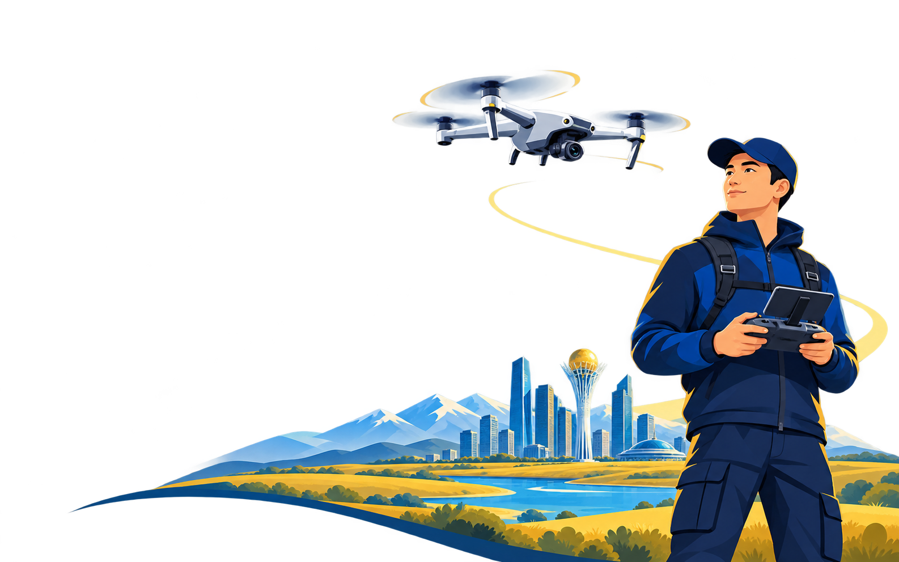
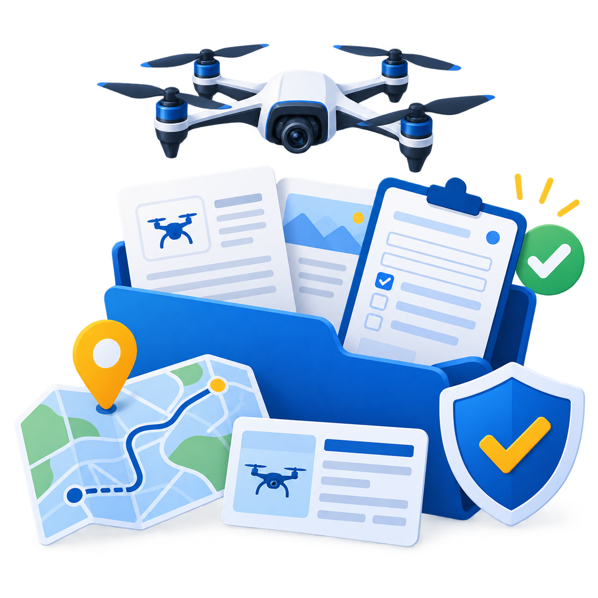
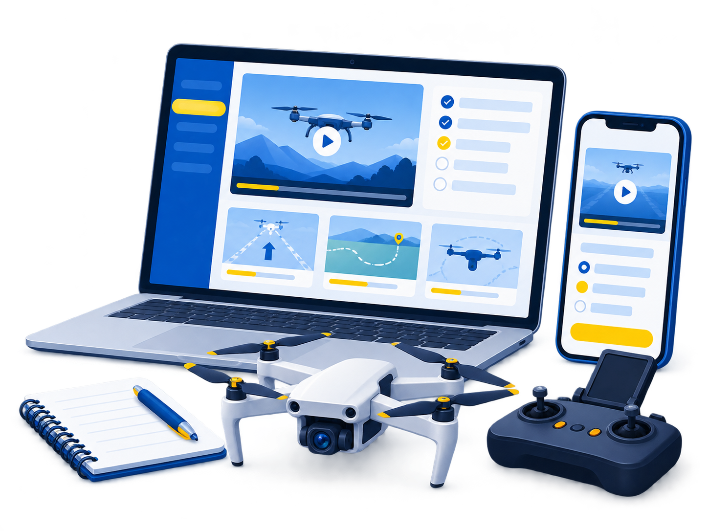
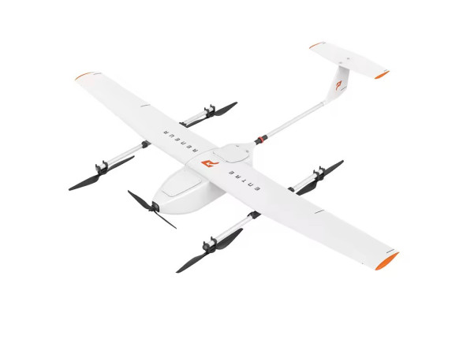
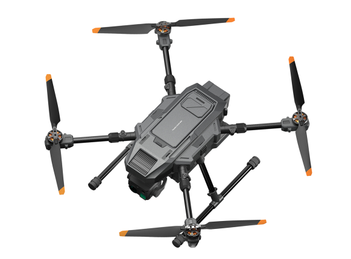

EASY Онлайн
Разберитесь в основах и подготовьтесь к первым полётам.
27 500 ₸
Онлайн · самостоятельное обучение
- Видеоуроки и учебные материалы
- Тесты для закрепления знаний
- Внутренний итоговый экзамен
- Документ об окончании курса
Научитесь понимать свой дрон, планировать полёты и управлять безопасно. Теория онлайн + оффлайн для Данияра. Нереальная практика в Павлодаре.

От знакомства с дроном до профессиональной подготовки.
Разберитесь в основах и подготовьтесь к первым полётам.
Изучите основы и закрепите их за пультом настоящего дрона.
Комплексная подготовка для профессиональной работы с мультиротором.
Групповая подготовка, техника заказчика и отчётность для компании.

Добавьте сопровождение «Под ключ»: помощь с постановкой дрона на учёт, подготовкой заявок и разбором разрешений для вашего сценария полётов.
Направление готовится к запуску. Цены, состав программ и порядок итоговой аттестации предварительные. Документ об окончании курса не заменяет разрешения на полёты. Статус одобрения учебной организации ААК в прототипе не заявляется.
Основы, теория с практикой или профессиональный маршрут.
Короткие уроки, понятные схемы и тесты после каждой темы.
Для практических программ — занятия с инструктором в Павлодаре.
По условиям программы. Для MID-M планируется независимый экзамен.

Планируем объяснять сложные темы через наглядные видео, анимации и ситуации из реальных полётов.
Конструкция, системы управления, аккумуляторы и ограничения оборудования.
Воздушное пространство, ответственность оператора и подготовка к безопасному вылету.
Погода, предполётный осмотр, маршрут, связь и действия в нештатных ситуациях.
Учебные тесты и итоговая проверка. Официальная экзаменационная база в прототипе не заявляется.
Онлайн-уроки дают основу. Практика помогает почувствовать управление и научиться принимать решения.
Подготовка к вылетуОсмотр техники, рабочая зона и проверка условий.
От простого к сложномуВзлёт, зависание, манёвры и точная посадка.
Разбор после полётаОбсуждение ошибок и следующих шагов с инструктором.
Беспилотные системы Preneu из каталога компании.

Самолёт вертикального взлёта и посадки
В каталоге DQB
Мультироторная беспилотная платформа
В каталоге DQBМодели показаны для знакомства с техникой компании. Использование конкретной модели на занятиях уточняется. Подготовка на VTOL не включена автоматически в программу MID-M.
Ответы на то, что важно знать
до выбора программы.
Да, для изучения теории свой дрон не требуется. Для практических занятий доступность учебной техники и условия её использования будут подтверждаться при записи.
Теоретическая часть одинаковая. В EASY Практика дополнительно запланировано 5 групповых занятий по пилотированию в Павлодаре.
Нет. Подготовка оператора, учёт дрона и разрешения на конкретный полёт — разные вопросы. Нужно соблюдать действующие ограничения воздушного пространства и требования к вашему сценарию использования.
ААК — АО «Авиационная администрация Казахстана». Образовательное направление DQB готовится к запуску. На этом прототипе не заявляется наличие одобрения ААК или право выдавать официальную квалификацию.
Это дополнительная помощь с учётом дрона, подготовкой заявок и разбором необходимых разрешений. Решения принимают уполномоченные органы. Опция не гарантирует одобрение и не включает государственные или сторонние сборы.
Нет. Это демонстрационный сайт: можно выбрать программу и посмотреть личный кабинет. Оплата, запись на занятия и доступ к учебным материалам пока не подключены.